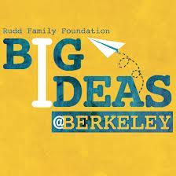

The Career Readiness and Financial Literacy Competition has been developed by John Fox, Matthew Signorotti, and Michael Signorotti. John is a former educator from American Legion High School, Matthew is a current senior at Christian Brothers High School and Project Manager of the Competition, and Michael is a graduate of the University of California, Berkeley and Christian Brothers High School.
After receiving a $1,000 Young Leaders Partnership Grant sponsored by the Walmart and Unilever corporations, is options, Michael decided to design and manage an academic competition focusing on career and technical preparation as well as financial literacy. The first annual Academic Competition took place at American Legion High School in 2010.
 This past May, the Competition was honored as the Schwab Foundation Financial Capability Grand Prize Winner by Big Ideas@Berkeley, an annual competition that provides funding and support to students creating social change.
The Career Readiness and Financial Literacy Competition is a program that teaches teenagers résumé writing, job interview and oral presentation skills, and financial literacy. The objective of the Competition is to prepare high school students for life after graduation by not only making them competitive for the workforce but also teaching them information about managing their finances.
Students from multiple area high schools prepare for the Career Readiness and Financial Literacy Competition through an enriching afterschool program. A resource guide is distributed to all student participants and serves as an outline of the various skills and financial concepts to be mastered by the end of the program. Students are evaluated as individuals or part of their high school teams in four categories: an oral presentation, a mock job interview, a written essay focusing on financial literacy, and a game show in which high school teams compete to answer financial-based questions.
A video is in development for the Career Readiness and Financial Literacy Competition.